Туры
Природа
Туры
Природа
Туры
Природа
Туры
Природа
динамично развивающаяся отрасль экономики России
Содержание: |
 |
Паспорт, полис, банковская карта, наличные деньги.
| Точно нужны: | |
| Смартфон и зарядка | В дороге удобно пользоваться смартфоном-долгожителем с емкостью батареи от 4 000 мА·ч. Если ваш смартфон быстро садится, возьмите к нему компактный внешний аккумулятор, например, Hiper XP10500. Зарядку от смартфона берите в ручную кладь. |
| Могут пригодиться: | |
| Внешний жесткий диск | Если тонны тяжелых снимков делать не планируете, излишки информации можно временно записать на смартфон, тогда жесткий диск не понадобится. |
| Наушники | Для путешествия выбирайте наушники с хорошей шумоизоляцией. |
| Ноутбук и зарядка | Зарядку от ноутбука и смартфона берите в ручную кладь. Тогда вы подзарядите девайсы в аэропорту и во время полета, а еще не останетесь без техники, если багаж задержится или потеряется. |
| Точно нужны: | |
| Бритва | Бритву можно купить на месте, но не факт, что найдете подходящую. |
| Дезодарант | Если летите только с ручной кладью, берите твердый дезодорант, либо жидкий / аэрозоль в емкости до 100 мл. |
| Зубная паста и щетка | Зубную пасту и щетку вы легко купите на месте. Если не хотите бегать по магазинам сразу после перелета, возьмите маленький или наполовину использованный тюбик пасты, а через 2–3 дня купите новый. |
| Расческа | |
| Могут пригодиться: | |
| Ватные палочки, ватные диски | |
| Влажные салфетки, бумажные платочки | Берите влажные салфетки в ручную кладь: их удобно иметь при себе во время перелета. |
| Дезинфицирующий гель для рук | Если забыли санитайзер, расслабьтесь и почаще мойте руки водой с мылом. |
| Кремы для лица и тела | Если сможете пару недель потерпеть без привычных средств, можно взять один универсальный крем или бальзам. |
| Ножницы и пилочка для ногтей | Вариант для нетребовательных — крошечный перочинный ножик с ножницами и пилочкой: и манго порежете, и ногти подровняете. Не забудьте: в ручной клади нельзя возить колюще-режущие предметы. Изредка разрешают взять маленькие ножницы с тупыми концами, но надежнее сдать в багаж. |
| Точно нужны: | |
| Блузка / рубашка | |
| Брюки / джинсы / штаны | Положив в чемодан брюки, проверьте, взяли ли подходящий ремень. |
| Кофта / худи / свитер / теплая рубашка | Если едете в теплые края, все равно возьмите одну вещь потеплее: вдруг вечером задует прохладный бриз или решите на денек выбраться в горы. |
| Нижнее белье | |
| Носки / колготки | Если собираетесь в поход, берите носки из расчета одна пара на один-два дня. |
| Удобная обувь на каждый день | Выбирайте привычную разношенную обувь, чтобы не натереть ноги. Кеды, мокасины, сандалии, ботинки, кроссовки — смотрите по погоде и местности. |
| Футболки с короткими и длинными рукавами |